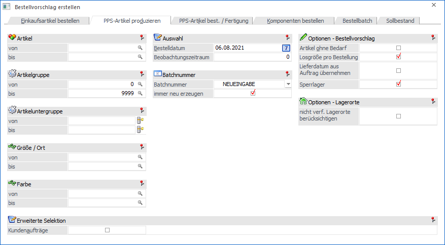
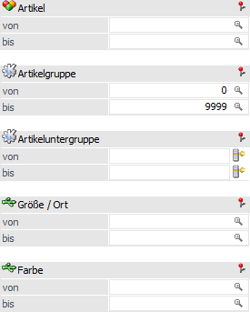
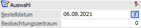
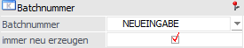
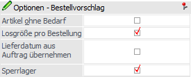
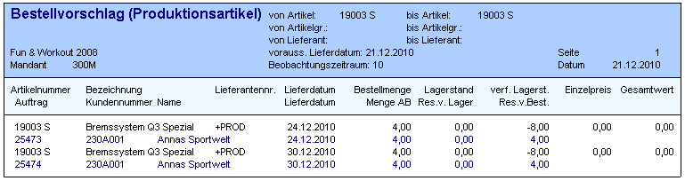
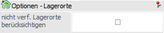
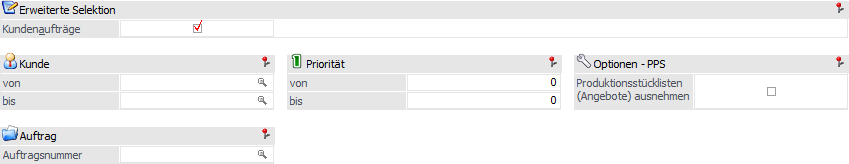

In diesem Register wird der Bestellvorschlag nur für Produktionsartikel durchgeführt. Dieses sind Artikel, welche den Artikeltyp "2 - Produktionsartikel" hinterlegt haben.
Hinweis
Bei der Übergabe an das Programm "Bestellvorschlag bearbeiten" wird der Lieferant "+PROD" genutzt, da die Artikel selber produziert und an die WinLine PPS übergeben werden. Somit ist eine Hinterlegung eines Lieferanten im Artikelstamm nicht notwendig.

Folgende Einstellungen können vorgenommen werden:
Selektion

Ø Artikel von / bis
An dieser Stelle können die Artikel für den Bestellvorschlag hinterlegt werden.
Hinweis
Wird nur eine Artikelnummer eingegeben und dieser Artikel wird mit Ausprägungen geführt, so werden alle Ausprägungen automatisch mitberücksichtigt. Nur wenn während des Anklickens des Buttons "Ok" die STRG-Taste gedrückt wird, so wird nur der Hauptartikel alleine berücksichtigt.
Ø Artikelgruppe von / bis
In diesen Feldern kann nach den Artikelgruppen eingeschränkt werden, welche in dem Bestellvorschlag berücksichtigt werden sollen.
Ø Artikeluntergruppe von / bis
An dieser Stelle kann nach den Artikeluntergruppen eingeschränkt werden. Bleiben die Felder leer, so werden alle Artikel aller Artikeluntergruppen in dem Bestellvorschlag berücksichtigt.
Ø Ausprägung 1 von / bis (hier "Größe / Ort")
Zusätzlich kann eine Einschränkung auf die Ausprägung 1 vorgenommen werden. Sobald eine Einschränkung auf Ausprägung 1 vorhanden ist, wird die, unter "Artikel" eingegebene Nummer, als Hauptartikelnummer verwendet.
Beispiel
Wenn unter "Artikel von / bis" die Nummer "10018" und unter Ausprägung 1 "K" bis "E" eingegeben wird, werden alle selektierten Ausprägungsartikel des Artikels 10018 in dem Bestellvorschlag berücksichtigt.
Ø Ausprägung 2 von / bis (hier "Farbe")
Neben Ausprägung 1 kann auch eine Einschränkung auf die Ausprägung 2 vorgenommen werden. Sobald eine Einschränkung auf Ausprägung 2 vorhanden ist, wird die, unter "Artikel" eingegebene Nummer, als Hauptartikelnummer verwendet.
Beispiel
Wenn unter "Artikel von / bis" die Nummer "CZ010" und unter Ausprägung 2 "GR" bis "ROT" eingegeben wird, werden alle selektierten Ausprägungsartikel des Artikels CZ010 in dem Bestellvorschlag berücksichtigt.
Auswahl

Ø Bestelldatum
In diesem Feld erfolgt die Eingabe des Produktionsdatums. Anhand dessen (ggfs. + Beobachtungszeitraum) wird der tatsächlich verfügbare Lagerstand berechnet, wobei der Lagerstand und alle bis einschließlich des Datums anstehenden Produktionen, sowie Ein- und Verkäufe (inklusive nicht gedruckter Einkaufsdispositionen) berücksichtigt werden.
Die ermittelte verfügbare Menge wird anschließend mit dem Mindestbestand aus dem Artikelstamm verglichen. Sollte der verfügbare Lagerstand dabei den Mindestbestand unterschreiten, so wird automatisch auf den Sollbestand aufgefüllt, d.h. diese Differenzmenge als "zu bestellen" vorgeschlagen.
Hinweis
Handelt es sich um sogenannte Reservierungsartikel, so wird bei der Berechnung der verfügbaren Menge immer bedacht, dass ggfs. bereits Bestellungen für den Artikel getätigt wurden.
Beispiel
Es soll am 14.03.2021 produziert werden, wobei der Artikel "10007" einen Lagerstand von 4 Stk. aufweist (Lagersollbestand: 10 / Lagermindestbestand: 5).
Die Bestellmenge beträgt in diese Fall 6, d.h. es wird auf den Sollbestand aufgefüllt, da der Mindestbestand unterschritten wurde (10 - 4 = 6).
Ø Beobachtungszeitraum
An dieser Stelle wird der Beobachtungszeitraum in Tagen hinterlegt (d.h. in wieviel Tagen soll wieder bestellt werden). Um diese Tage wird das eigentliche Bestelldatum ergänzt und als Grundlage zur Ermittlung des verfügbaren Lagerstands herangezogen.
Beispiel
Es soll am 14.03.2021 produziert werden (Beobachtungszeitraum 10 Tage), wobei der Artikel "10007" einen Lagerstand von 4 Stk. aufweist (Lagersollbestand: 10 / Lagermindestbestand: 5). Zusätzlich existieren noch folgende Verkäufe:
ü Auftrag 1 - Artikel 10007 - 10 Stk. - Lieferdatum 20.03.2021
ü Auftrag 2 - Artikel 10007 - 5 Stk. - Lieferdatum 27.03.2021
Die Produktionsmenge beträgt in diesem Fall 16, d.h. es wird mit 6 Stk. der Sollbestand aufgefüllt und 10 Stk. für den Kundenauftrag 1 produziert (14.03.2021 + 10 Tage Beobachtungszeitraum = 24.03.2021). Der Auftrag 2 fällt in die Berechnung nicht hinein, da dieser einen Liefertermin hat, welcher später ist als der 24.03.2021 (Bestelldatum + Beobachtungszeitraum).
Batchnummer

Ø Batchnummer
Die Batchnummer dient zur Zusammenfassung von Bestellvorschlägen. Sobald aus der Auswahlliste eine bestehende Batchnummer ausgewählt wird (ungleich "NEUEINGABE"), wird kein neuer Batch erstellt, sondern ein bestehender ergänzt. Zusätzlich kann aus der Auswahlliste ein bestehender Batch ausgewählt werden.
Hinweis
Die Batchnummer setzt sich wie folgt zusammen:
ü Batchnummer
ü Batchname
ü Batchbezeichnung (siehe Register "Bestellbatch bearbeiten")
ü Datum
ü Benutzer
Ø immer neu erzeugen
Wenn diese Option aktiviert ist (Standard-Einstellung), so wird beim Öffnen des Fensters die Auswahlliste für die Batchnummer auf "NEUEINGABE" gesetzt.
Bleibt diese Checkbox inaktiv, so wird der letzte Batch vorgeschlagen, welchen der Benutzer am "heutigen" Tag angelegt hat.
Hinweis
Die Einstellung dieser Checkbox wird benutzerspezifisch gespeichert.
Optionen - Bestellvorschlag

Ø Artikel ohne Bedarf
Wenn diese Option aktiviert ist, dann werden alle Artikel der vorgenommenen Selektion in das Fenster "Bestellvorschlag bearbeiten" angezeigt / übergeben, wobei dann - bei den Artikeln, bei denen kein Bedarf vorhanden ist - die Menge mit 0 vorgeschlagen wird.
Ø Losgröße pro Bestellung
Wenn diese Checkbox aktiviert ist (Standard-Einstellung), so wird die EK-Losgröße für jede einzelne Bestellzeile berücksichtigt (insbesondere auch bei Bestellzeilen vom Typ "Einzelzeile").
Wenn die Checkbox deaktiviert wird, so wird bei der Berechnung der Bestellmenge für eine Bestell-"Einzelzeile" der resultierende Lagerstand aus den vorigen Bestellzeilen in diesem Bestellvorschlag laufend mitberücksichtigt. Dadurch kann vermieden werden, dass die hinterlegte EK-Losgröße bei jeder einzelnen Bestellzeile für die Mengenberechnung angewendet wird. Dies kann dazu führen, dass eine eigene Bestellzeile (Typ "Einzelzeile") pro Auftrag nicht mehr erzeugt wird, da aus den vorigen Bestellzeilen in dem Bestellvorschlag noch genügend Menge auf Lager vorhanden ist.
Ø Lieferdatum aus Auftrag übernehmen
Wenn diese Option aktiviert ist, so wird das Lieferdatum aus dem Kundenauftrag als Produktionstermin für die Produktions-Dispositionszeile übernommen (bzw. aus einem Produktionsauftrag, wenn die Produktions-Disposition für eine Baugruppe Typ "Immer vom Lager" erzeugt wird). Wenn die Dispozeilen in die WinLine PPS eingelesen werden, so wird dadurch das Lieferdatum aus dem Auftrag als Produktionsdatum für den Produktionsauftrag vorgeschlagen.
Die Option kann auch für die Produktions-Disposition verwendet werden, z.B. sowohl bei Fertigartikeln als auch Halbfertigartikeln mit Lagerproduktion ("Immer vom Lager"). Die Halbfertigartikel müssen Option "Einzelzeilen" im Artikelstamm für den Einkauf hinterlegt haben und ggf. mit Typ "2 - Bestellung mit Reservierung" arbeiten. Wenn die Checkbox "Lieferdatum aus dem Auftrag übernehmen" aktiviert ist, wird bei jeder Einzelzeile (jede Zeile wird als eigenes Produktionsauftrag dann in die WinLine PPS eingelesen) das Lieferdatum aus dem Kundenauftrag bzw. das Produktionsdatum aus der darüber liegenden Produktionsauftragsebene herangezogen.
Beispiel
Die Baugruppe "19003 S Bremssystem Q3 Spezial" ist bei 2 Produktionsaufträgen eingeplant, 25473 und 25474. Die jeweiligen Produktionsdatümer aus diesen Produktionsaufträgen werden für die Baugruppe als "Lieferdatum" für den Bestellvorschlag, d.h. für die Produktions-Disposition, vorgeschlagen.

Wenn die Checkbox nicht aktiviert ist, so wird bei Artikeln mit "Einzelzeilen" dasselbe Datum als Produktionsdatum für die Produktions-Dispozeile vorgeschlagen.
Achtung
Grundvoraussetzung für die Nutzung der Option ist, dass bei dem Artikel die Einkaufsoption "1 - Einzelzeilen" (Artikelstamm - Register "Lager" - Unterregister "Einstellungen" - Feld "Einkauf") zugewiesen wurde.
Ø Sperrlager
Mit Hilfe der Option "Sperrlager" kann definiert werden, ob der Lagerstand von Sperrlägern (Ausprägungen) bei der Ermittlung des verfügbaren Lagerstands berücksichtigt werden soll oder nicht.
ü Option aktiviert
Es werden
Sperrlagerzeilen bei der Berechnung der verfügbaren Menge berücksichtigt, d.h.
in der Regel ist somit weniger verfügbarer Lagerstand vorhanden.
ü Option "deaktiviert
Es werden
Sperrlagerzeilen bei der Berechnung der verfügbaren Menge nicht berücksichtigt,
d.h. in der Regel ist somit mehr verfügbarer Lagerstand vorhanden..
Optionen - Lagerorte

Ø nicht verf. Lagerorte berücksichtigen
Im Standard wird der Bestand von nicht verfügbaren Lagerorten bei der Berechnung der verfügbaren Menge ignoriert, d.h. abgezogen. Mit Hilfe der Option "nicht verf. Lagerorte berücksichtigen" kann dieses deaktiviert werden.
Erweitere Selektion

Ø Kundenaufträge
Durch die Aktivierung der Option "Kundenaufträge" stehen weitere Selektionsfelder zur Verfügung.
Ø Kunde von / bis
An dieser Stelle kann nach Kunden und deren Verkaufszeilen selektiert werden. Sollte eine Selektion hinterlegt werden, so werden nur die Artikel für den Kunden produziert, die Auffüllung auf Sollbestand findet hingegen nicht statt.
Ø Auftragsnummer
An dieser Stelle kann nach einem Kundenauftrag selektiert werden. Sollte eine Selektion hinterlegt werden, so werden nur die Artikel für diesen Auftrag produziert, die Auffüllung auf Sollbestand findet hingegen nicht statt.
Ø Priorität von / bis
Durch Hinterlegung von Prioritäten werden nur entsprechende bestimmte Ein- und Verkaufszeilen bei der Erstellung des Bestellvorschlags berücksichtigt.
Ø Produktionsstücklisten (Angebote) ausnehmen
Wenn diese Option aktiviert ist, so werden Dispozeilen von Produktionsaufträgen, die in einem Angebot angelegt wurden, nicht berücksichtigt.